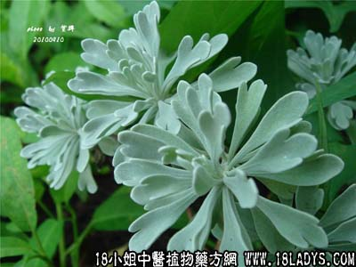

别名：细叶芙蓉。
植物名：芙蓉菊。
生长环境：本品为直立、分枝亚灌木，常见为栽培。
分布：原产我国、广东以中南部栽种较多。
入药部分：叶。
采集期：全年。
自采地点：家中。
性味：性微凉、味苦。
功能：清热解毒、辟臭秽、止痰止咳、解麻痘毒。
主旨、用量和用法：1、鸡咳：生用2至5钱，捣烂炖蜜糖服；2、麻疹咳嗽：生用2至5钱，清水煎服；3、麻疹发痒：生用以扫痒处；4、小儿腹泻：生用5钱捣烂，加蛋白调匀，在锅上肩熟敷脐部；5、疮疡及乳疮：未溃者，生用捣烂加片糖和匀外敷；已溃者，用干叶为末，加花士苓调匀外敷。
（方歌）芳香辟秽玉芙蓉，麻痘疮疡化毒脓，小儿鸡咳和蜜肩，捣烂敷脐止泻疼。
附录：（根）主治内伤咳血，干用5钱至1两，清水煎服。
参考资料：《广州常用草药验方集解》治疗小儿腹泻经验方：玉芙蓉一味，把玉芙蓉叶捣烂，煮热，温贴肚脐。有驱风、止肚痛、止泻作用。
（方解）玉芙蓉芳香辟秽浊’驱风、小儿腹痛而泻，由于受封这，用此方敷脐，温里而不刺激皮肤。
（方歌）小儿腹泻或因封，芳香辟秽玉芙蓉，煮热摊和敷肚穴，祛风温里建奇功。
本文解释权归中药大全，本文地址：https://www.daquan.com/post/1629.html